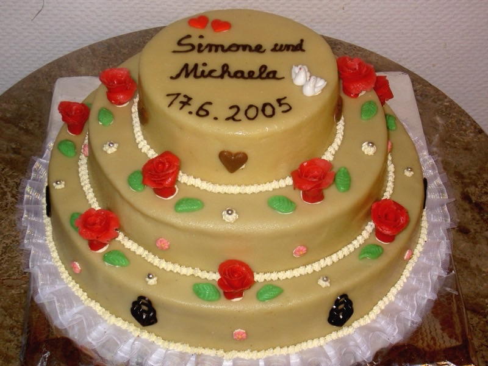
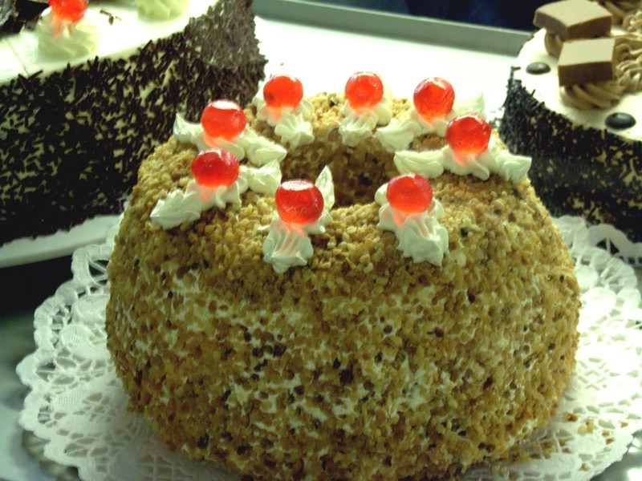
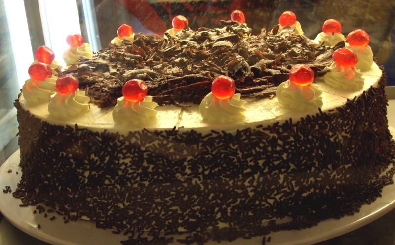

Torten auf Bestellung
Torten mit Vorlauf. Gebacken wie seit 1906.
Frankfurter Kranz, Schwarzwälder, Aprikosentorte und Kreationen nach Absprache.
Wofür wir backen
Hochzeit
Mehrstöckig nach Absprache.

Geburtstag
Vom Klassiker bis zur Wunschtorte.

Firmenfeier
Auch größere Mengen, rechtzeitig bestellt.

Ablauf
So bestellen Sie
Anrufen
030 44 57 576, zu den Ladenzeiten. Oder direkt im Geschäft.
Besprechen
Größe, Geschmack, Abholtermin. Je früher, desto sicherer der Wunschtermin.
Abholen
Im Laden, Schönfließer Straße 12. Frisch aus der eigenen Konditorei.
Bestellung telefonisch
Wir backen das für Sie
Di bis Fr 6:00 bis 18:30, Sa bis 13:30. Mehrfach von DER FEINSCHMECKER unter die besten Bäcker Deutschlands gewählt.